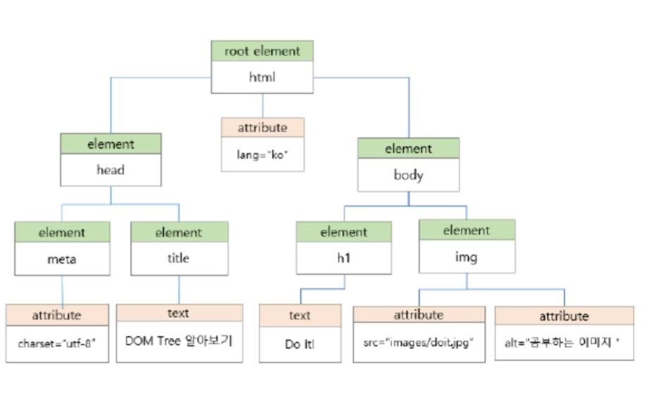
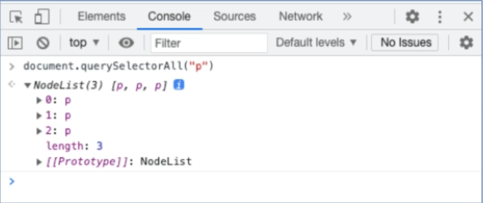

Chapter 7
Chapter 7 summary
DOM 활용
DOM 트리와 노드
DOM에는 단순히 태그에 해당하는 요소 노드뿐만 아니라 여러 종류의 노드가 있다.
DOM 트리에서 가지가 갈라져 나가는 부분은 노드라고 하고,
DOM 트리의 시작 부분, 즉 html 노드를 나무의 뿌리에 해당하는 루트 노드라고 한다.
노드를 구성하는 원칙
모든 HTML 태그는 요소 노드 가 된다.
HTML 태그에서 사용하는 텍스트 내용은 자식 노드인 텍스트 노드 가 된다.HTML 태그에 있는 속성은 모두 자식 노드인 속성 노드 가 된다.주석들은 주석 노드 가 된다.
DOM 트리와 노드
<!DOCTYPE html>
<html lang="ko">
<head>
<meta charset="utf-8">
<title>DOM Tree 알아보기</title>
</head>
<body>
<h1>Do it!</h1>
<img src="images/doit.jpg" alt="공부하는 이미지">
</body>
</html>

노드 리스트
querySelectorAll()메서드를 사용하면 여러 개의 노드를 한꺼번에 가져올 수 있다.
가져온 여러 개의 노드 정보를 저장한 것을 노드 리스트라고 한다.
노드 리스트는 배열과 비슷하게 생겼고 배열처럼 사용할 수 있다. (배열은 아님)
<h1>노드 리스트 살펴보기</h1>
<p>HTML</p>
<p>CSS</p>
<p>Javascript</p>
콘솔 창에 입력하기
document.querySelectorAll("p")
p 요소 노드들을 저장한 노드 리스트 중에서
document.querySelectorAll("p")[1]

웹 문서에 새로운 노드 추가하기 텍스트 내용이 있는 노드 추가하기
<body>
<h1>노드 리스트 살펴보기</h1>
<p>HTML</p>
<p>CSS</p>
<p>Javascript</p>
</body>
노드 리스트 살펴보기
HTML
CSS
Javascript
요소 노드 만들기 – createElement()
DOM에 새로운 요소를 추가할 때 가장 먼저 요소 노드를 만들어야 한다.
document.createElement(요소명 )
let newP = document.createElement("p")
텍스트 노드 만들기 – createTextNode()
텍스트 노드를 만드는 메서드는 createTextNode()
document.createTextNode(텍스트 )
p 요소에 들어갈 내용을 텍스트 노드로 만들고 textNode라는 변수에 저장
let textNode = document.createTextNode("Typescript")
자식 노드 연결하기 – appendChild()
아직까지는 p 노드와 텍스트 노드가 따로 만들어진 상태
newP.appendChild(textNode)
← 텍스트 노드를 p 요소에 연결
document.body.appendChild(newP)
← p 요소 노드를 body 노드에 연결
[실습] 장바구니에 상품 추가하기
책 소개 화면에서 [주문하기] 버튼을 클릭하면 그 아래 장바구니 영역에 책 제목 텍스트를 추가하기
<생각해 보기>
클릭하는 버튼과 결과를 표시할 영역을 어떤 방식으로 가져올까?
새로 만든 텍스트를 화면에 어떻게 연결할까?
장바구니에 상품 추가
상품 설명
HTML+CSS+자바스크립트 웹 표준의 정석
주문하기
-------------------------------------
속성 노드 만들기 - createAttribute()
속성 노드 만들기 – createAttribute()
createAttribute() 메서드를 사용해서 속성 노드를 만들고,속성의 값은 value 프로퍼티를 사용해서 지정한다.
document.createAttribute(속성명 )노드명 .value = 속성값
콘솔 창에 입력하기
let srcNode = document.createAttribute("src")
속성 노드 연결하기 – setAttributeNode()
속성 노드 연결하기 – setAttributeNode()
새로 만든 속성 노드를 요소 노드에 추가하려면
setAttributeNode() 메서드 사용setAttribute()와 다른 메서드이므로 꼭 구별해서 사용하세요
요소_노드.setAttributeNode(속성_노드)
콘솔 창에 입력하기
newImg.setAttributeNode(srcNode)
자식 노드 연결하기 – appendChild()
자식 노드 연결하기 – appendChild()
img 요소에 속성 노드가 연결되었지만,
img 요소는 아직 DOM 에 연결되지 않은 상태appendChild() 를 사용해서 img 요소를 원하는 위치에 연결한다.
콘솔 창에 입력하기
document.body.appendChild(newImg)
기존 노드 앞에 추가하기 – insertBefore()
기존 노드 앞에 추가하기 – insertBefore()
지금까지 살펴본 방법은, 새로 만든 요소를 부모 노드의 맨 마지막에 자식 노드로 추가하는 것.insertBefore() 를 사용하면 특정 노드 앞에 새 요소를 추가할 수 있다.
insertBefore(새 노드, 기준 노드)
07\nodelist.html
<h1>노드 리스트 살펴보기</h1>
<p>HTML</p>
<p>CSS</p>
<p>Javascript</p>
여기에 새로운 p 요소 추가하기